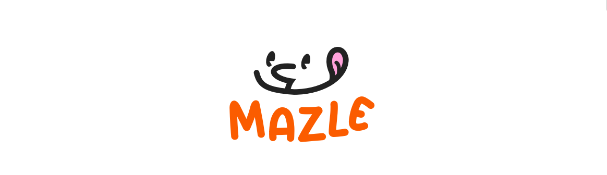
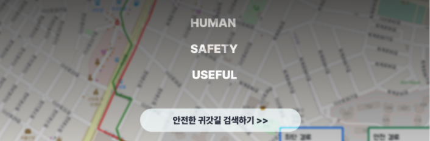
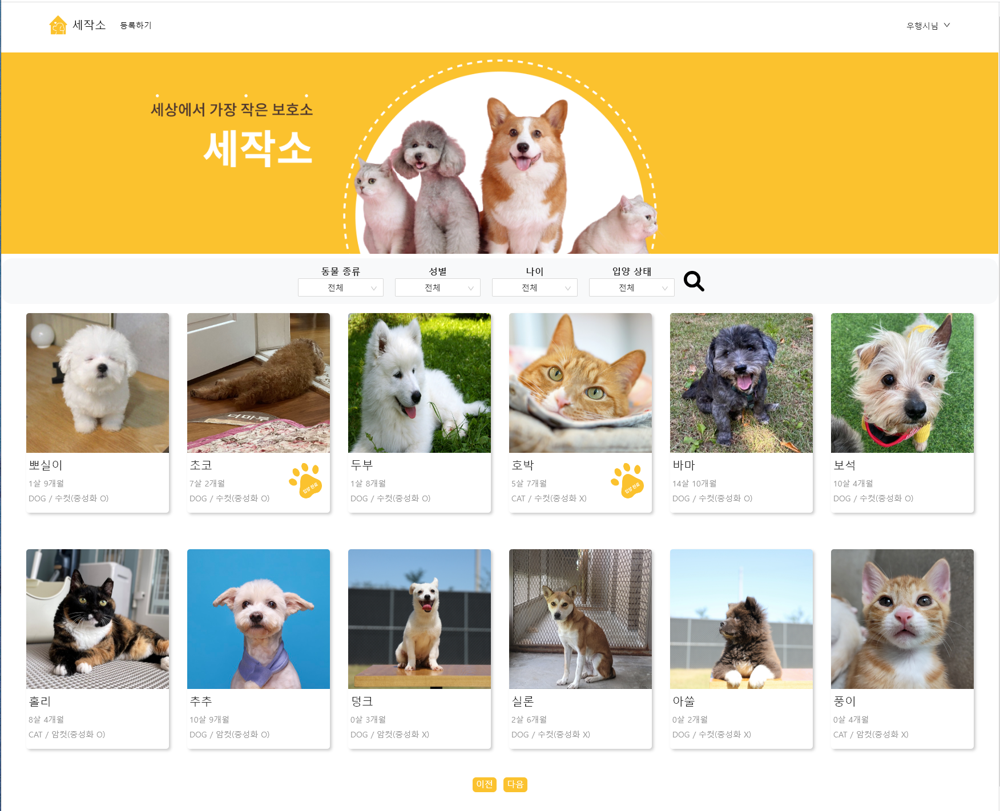
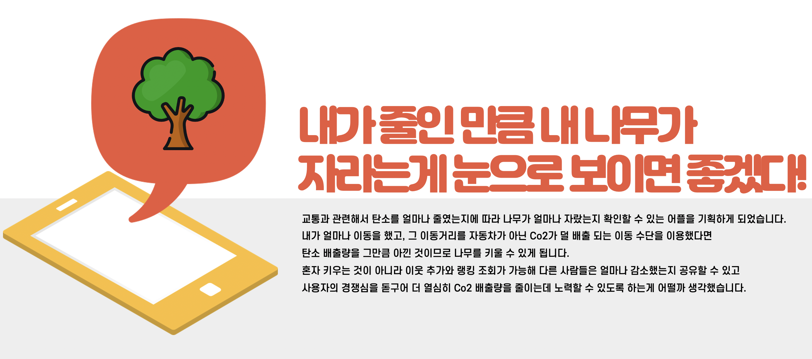
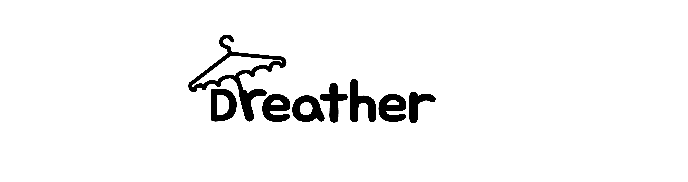
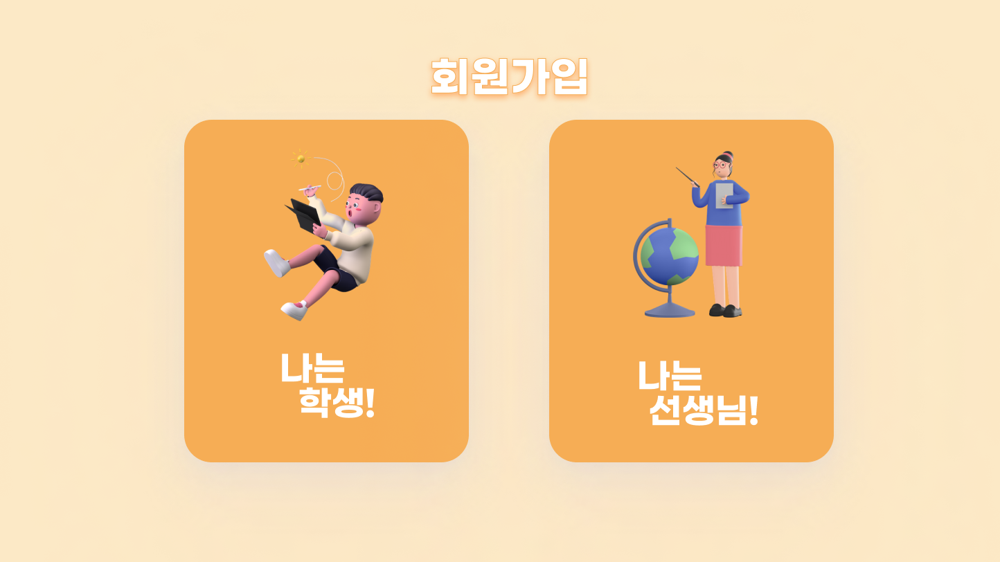

안녕하세요! 디자인하는 개발자, 김성은입니다.
소개
열정도 중요하지만 정확하게 하는 것, “잘” 하는 것을 더 중요하게 생각합니다.
정적이 아닌 동적으로 행동하고 고민하는, 하지만 한번 시작하면
끝장을 보는 성격을 갖고 있습니다.🏃♀️
이력
-
DND 7기 IT연합동아리
실제 스타트업에서의 사업과정을 직접 거쳐 프로젝트를 진행합니다.
프론트엔드 담당
-
네이버웍스 부스트캠프 9기
매주 과제를 통해 node.js와 html(ruby)를 이용하여 서비스
하나를 제작합니다.프론트엔드 & 백엔드
-
UMC 2기 IT연합동아리
커리큘럼을 따라 교육을 받은 후에 헤커톤을 거치고 프로젝트를
마무리합니다.프론트엔드 운영진/팀원
-
학회장 및 과대
2021에 학회장, 2020에 과대를 맡았습니다.
상명대학교
-
상명대학교 홍보대사
2020-2021동안 학교 공식 홍보대사를 하여 카드뉴스, 유튜브로
홍보했습니다.상명대학교
진행한 프로젝트
MAZLE (마시는 즐거움, 마즐)

E마즐은 MZ세대가 경험을 중시하는 편이고 식음료가 스트레스 관리 활동이자 새로운 문화임을 고려하며 나오게된 서비스 입니다. 이 프로젝트에서 UI구현과 백엔드와의 API 통신을 거의 다 도맡아 하게 되었습니다.
세로(Safety on the Road)

낮이든 밤이든 안전한 귀가길 혹은 안전한 경로가 필요로 할 때 쓰일 수 있는 서비스입니다. 지도 위에 hexgrid를 사용하여 육각형 모양의 너비에 해당하는 좌표를 따라 알고리즘을 통해 경로를 추천해주는 방식으로 길찾기를 구현하였습니다
세상에서 가장 작은 보호소, 세작소

세작소는 대표적으로 유행사, 카라, 포인핸드같은 유기견, 유기묘를 입양하기 위한 서비스의 정보가 흩어져 있다는 불편함같은 단점만을 보강한 서비스입니다. 프론트엔드로 해커톤에 참여하고 현재 디벨롭 과정에 있습니다.
탄소먹는 나무

KBSC 공모전의 출품작입니다. 내가 탄소발자국을 최대한 남기지 않는 방법(걷기 및 자전거)으로 출발지부터 목적지까지 이동했다면 대중교통 및 자동차를 이용했을 때 나올 탄소발자국을 아낀 것이므로 그만큼 나무를 키울 수 있게 됩니다.
Dreather

GDSC 해커톤에서 진행한 프로젝트입니다. 이런 아이디어인 경우 보통은 날씨에 따라 코디를 추천해주곤 하는데 “드레더”는 내가 입고싶은 코디를 언제 입으면 날씨에 딱 맞을지 최대 6일 후까지 날씨정보를 제공하고 그 날씨에 코디가 어울리는지를 알려줍니다.
RUN-UP
